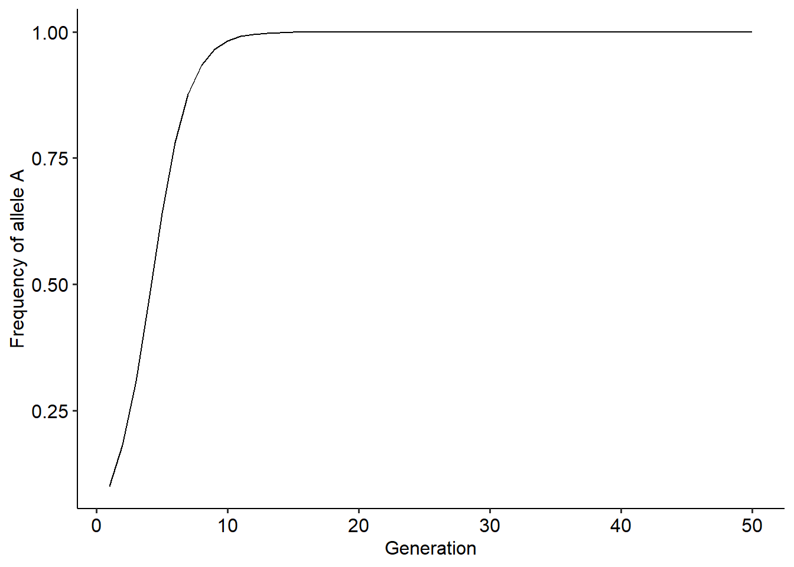
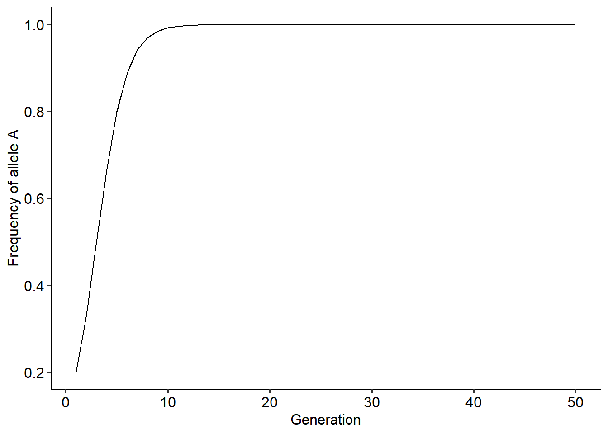
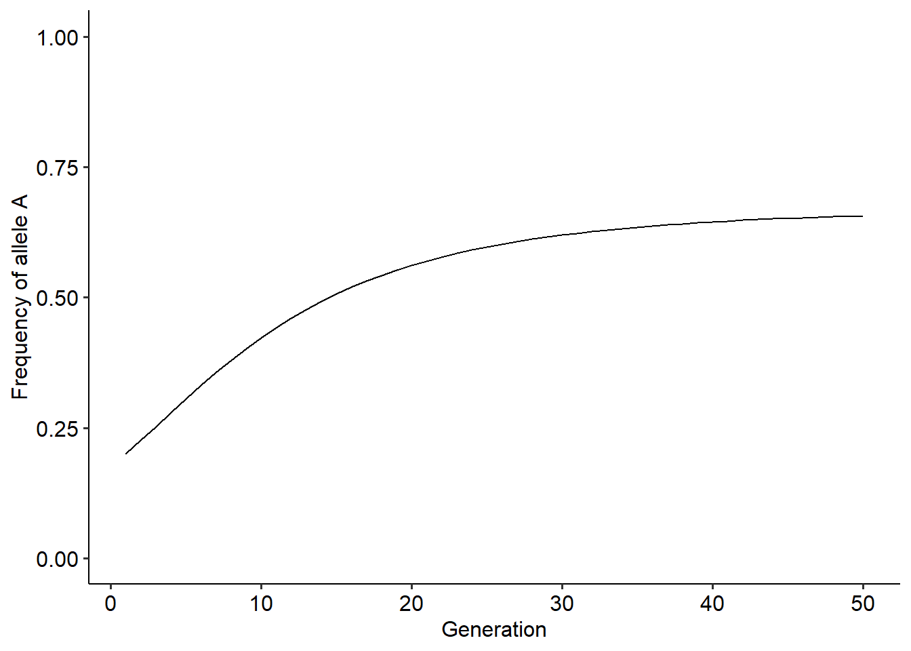
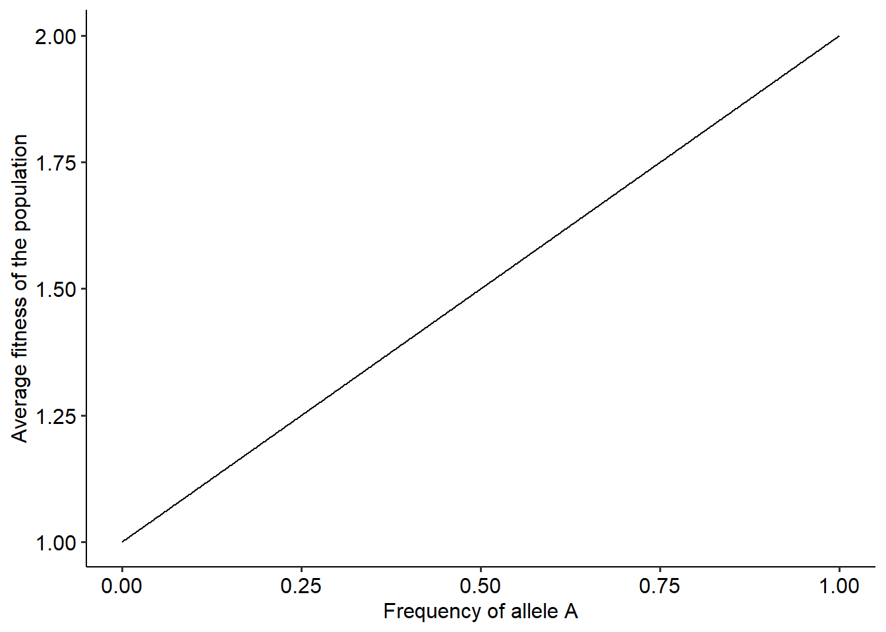
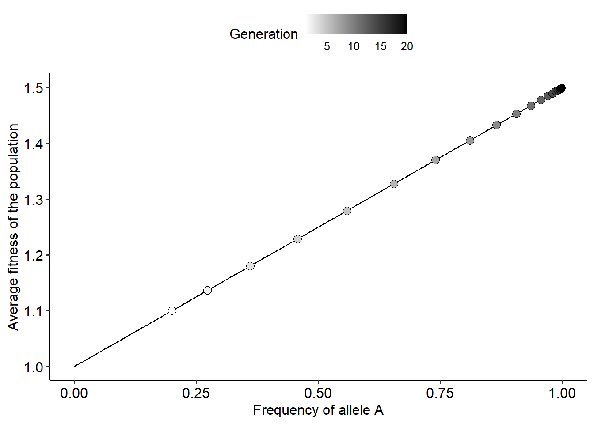
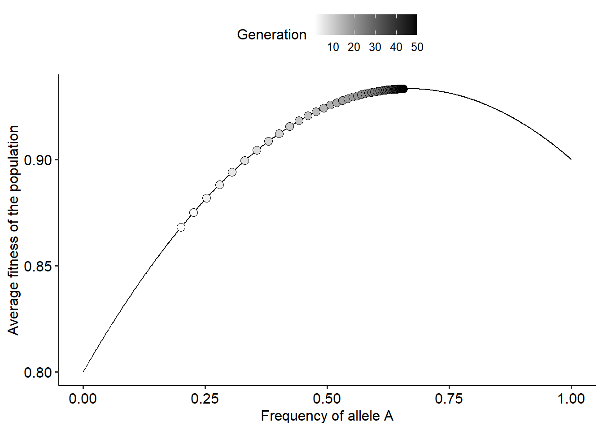

3 Exercise: Evolution of allele frequencies
3.1 Simulating evolutionary changes in allele frequencies
In the first lecture we studied and derived the classical Wright’s equation that predicts how natural selection can drive changes in the frequency of alleles over generations in a population. Throughout this exercise section, we will perform numerical simulations of this equation to gain more intuition about how evolution will proceed under different scenarios. We begin with the equation that we are trying to simulate:
\[ \Delta p=p^{(t)}(1-p^{(t)})\frac{\left(W_{A}^{(t)}-W_{B}^{(t)}\right)}{\overline{W}^{(t)}} \]
Our first step is to define a vector that will store the frequencies, \(p\) at each time step (generation) of the model, and an initial frequency of \(p\), \(p_{0}\). The choice of initial value is arbitrary and depends on your particular problem. Here we will start with \(p_{0}=0.1\), but feel free to use and explore different values.
Now, we need to code how \(p\) gets updated at each time step. From the equation, \(p\) gets updated depending on its value at the current time step, \(t\), and the fitness of individuals carrying the alleles \(A\) or \(B\). So, we also need to define what are the fitness functions of these individuals. We will explore different scenarios, but we will begin with a constant value:
Now, we need to iterate over the equation so that we can obtain the frequencies at future generations. To do so, we will first define for how many generations, \(t_{max}\), we will run the simulation. Then, we will use a for loop to perform the iterations. In the for loop we will go through the following steps:
Set the value of \(p\) to the one at the current time step, \(t\)
Compute the average fitness of the population as \(pW_{A}+(1-p)W_{B}\)
Update the value of \(p\) using Wright’s equation
These steps are highlighted in the block of code below:
tmax = 50 # The simulation will run for 50 generations
for(t in 1:(tmax-1)){ #Setting up the for loop
p = dp[t] # Step 1
w_avg = p*wA + (1-p)*wB #Step 2
dp[t+1]= p + (p*(1-p)*(wA-wB)/w_avg) #Step 3
}That is it! We have performed our first numerical simulation. Now that we have the outcome along generations, we can plot the results. To plot the results, we first set up a data frame with columns containing the outcome on our variable of interest. This variable is called a state variable and here it is the frequency of \(p\) over the 50 generations of the population. With the data frame set up, we can plot how the state variable (on the y-axis) changes over the generations (x-axis). You can use a plot method of your choice. Here we are going to use the package ggplot2 for all of the plots. The code to perform the steps above can be found below:
library(ggplot2)
library(ggpubr)
r = data.frame(dp=dp, t=1:tmax)
ggplot()+
geom_line(data=r, aes(x=t, y=dp))+
xlab("Generation")+ylab("Frequency of allele A")+
theme_pubr()
Now that we have the code to perform the numerical simulations, it is convenient to put everything inside a function. For this example, our function will take as input arguments \(t_{max}\), \(W_{A}\), \(W_{B}\) and the initial frequency of allele A in the population, \(p_{0}\). Then, the function will run the simulation and return a data frame containing the different values of \(p\) over the \(t_{max}\) generations of the simulation. The code of the implement the function is as follows:
evo_simulation<-function(tmax, p0, wA, wB){ #Defining the function and the input arguments
dp = c() #Creating the vector to store the outcome
dp[1]<-p0 #Setting the initial frequency of p
for(t in 1:(tmax-1)){ #Setting up the for loop
p = dp[t] # Step 1
w_avg = p*wA + (1-p)*wB #Step 2
dp[t+1]= p + (p*(1-p)*(wA-wB)/w_avg) #Step 3
}
r = data.frame(dp=dp, t=1:tmax) # Building the data frame
return(r)
}
# Running the function to test it:
r = evo_simulation(tmax=50, p0=0.2, wA=2, wB=1)
# Plotting the result
ggplot()+
geom_line(data=r, aes(x=t, y=dp))+
xlab("Generation")+ylab("Frequency of allele A")+
theme_pubr()
Now that we have a function that makes it very easy to simulate the changes in allele frequencies, try to explore how different values of \(p_{0}\), \(W_{A}\) and \(W_{B}\) affect the evolutionary dynamics. Try to also explore how different values of \(t_{max}\), or the time scale that we are looking at, can change our perception about how evolution is unfolding in a population.
3.2 Using different assumptions for the fitness of alleles A and B
In the previous section we simulated the evolutionary dynamics of allele frequencies when the fitness of individuals carrying either one of the alleles are constant values. However, what would happen when fitness can change over time? Now, we will explore the evolutionary dynamics when \(W_{A}\) and \(W_{B}\) depends not only on constant value but also can vary with the frequency of allele \(A\) or \(B\). This is the case mentioned in the lecture notes that correspond to frequency-dependent values of fitness. To understand how frequency-dependence can affect the outcome, we will assume that \(W_{A}\) and \(W_{B}\) have the same constant baseline value, but can decrease with the frequency of their corresponding allele. This can be represented with the following two equations:
\[\begin{align} W_{A}^{(t)}&=1-\alpha p^{(t)} \\ W_{B}^{(t)}&=1-\beta (1-p^{(t)}) \end{align}\]
where \(\alpha\) and \(\beta\) weight how much \(W_{A}\) and \(W_{B}\) is decreased depending on the frequency of alleles \(A\) and \(B\), respectively. Since it does not make biological sense to have negative fitness values, we just need to choose the values of \(\alpha\) and \(\beta\) so that fitness is never negative. Under this assumption, we can now build a now function that take as input arguments the parameters \(\alpha\) and \(\beta\), instead of the constant values of \(W_{A}\) and \(W_{B}\). The difference is that because fitness can vary across time, at each time step of the model we need to recompute fitness values. The code for the modified function is depicted below:
evo_simulation<-function(tmax, p0, alpha, beta){ #Defining the function and the input arguments
dp = c() #Creating the vector to store the outcome
dp[1]<-p0 #Setting the initial frequency of p
for(t in 1:(tmax-1)){ #Setting up the for loop
p = dp[t] # Setting current frequency
wA = 1-(alpha*p) #Computing the fitness of A at the current generation
wB = 1-(beta*(1-p)) #Computing the fitness of B at the current generation
w_avg = p*wA + (1-p)*wB #Computing the average fitness of the population
dp[t+1]= p + (p*(1-p)*(wA-wB)/w_avg) #Updating frequencies
}
r = data.frame(dp=dp, t=1:tmax) # Building the data frame
return(r)
}
# Running the function to test it:
r = evo_simulation(tmax=50, p0=0.2, alpha=0.1, beta=0.2)
# Plotting the result
ggplot()+
geom_line(data=r, aes(x=t, y=dp))+
xlab("Generation")+ylab("Frequency of allele A")+
scale_y_continuous(limits=c(0,1))+ #Setting the limits on the y-axis to be the same as in the previous model
theme_pubr()
With this new function, explore how different values of \(\alpha\), \(\beta\) and \(p_{0}\) change the outcome. In your exploration, try to answer the following questions:
How frequency-dependence changes the outcome of the evolutionary dynamics?
Does the initial value of allele frequency in the population affect the final outcome?
What is the role of \(\alpha\) and \(\beta\) in the outcome of the dynamics?
What would be an ecological mechanism that can lead to the type of frequency dependence that we are exploring? What ecological pattern would you expect under this mechanism over the generations of a population?
3.3 Simulating Wright’s adaptive landscape
Until now we have explored the evolutionary dynamics of allele frequencies a population under different assumptions of the fitness of individuals carrying these alleles. In the lecture notes we saw that the evolutionary dynamics of these alleles can be visualized as populations embedded in a fitness landscape, depicting the relationship between the average fitness of a population and trait values. We also studied that the direction and magnitude of the evolutionary change is given by the slope in this landscape at a particular point of allele frequency. Here, we will explore how we can visualize the fitness landscape of the populations and how the populations move across this landscape along the evolutionary dynamics. In our example, the fitness landscape depicts the relationship between the average fitness of the population and the frequency of one allele. Therefore, to build this landscape we need to simulate what would be the average fitness of a population for many different values of allele frequency. To do so, we will perform the following steps:
Define the fitness of alleles \(A\) and \(B\)
Build a vector containing many different values of \(p\), varying from 0 to 1.
Compute the average fitness of the population, \(\overline{W}\), for each of these values of \(p\).
Plot and visualize the fitness landscape.
We will begin with constant fitness values, and then, will explore how the landscape changes with frequency-dependent fitness values. These three steps are implemented and highlighted in the code below:
wA = 2 # Step 1
wB = 1 # Step 1
p = seq(0, 1, 0.001) # Step 2
w_avg = p*wA + (1-p)*wB #Step 3
land = data.frame(p, w_avg) #Building a data frame with values of p and the corresponding average fitness
# Plotting the landscape.
ggplot()+
geom_line(data=land, aes(x=p, y=w_avg))+
xlab("Frequency of allele A")+ylab("Average fitness of the population")+
theme_pubr()
Well, this landscape resembles much more a “ladder” than a proper landscape. However, this makes complete sense when we think about the relationship between \(\overline{W}\) and \(p\) when fitness are constant values. In fact, we can understand this relationship better with the equation for \(\overline{W}\) as a function of \(p\), as follows:
\[\begin{aligned} \overline{W}^{(t)}&=p^{(t)}W_{A} + (1-p^{(t)})W_{B} \\ \overline{W}^{(t)}&=p^{(t)}W_{A} + W_{B} - p^{(t)}W_{B} \overline{W}^{(t)}&=W_{B}+(W_{A}-W_{B})p^{(t)} \end{aligned}\]
The equation above shows that the relationship between \(\overline{W}\) and \(p\) is the equation of a line. The line has intercept equal to \(W_{B}\) and slope equal to \((W_{A}-W_{B})\). It is this slope that will determine the direction of evolutionary change. Now that we know how to build the landscape under a fitness function, we can also visualize how populations move in this landscape. We first build the landscape. Then, we use our function to simulate the evolutionary dynamics and plot the position of our population in the landscape in different generations. It is easier if we put everything inside a single function as we can find below:
## Loading required package: viridisLiteevo_landscape<-function(tmax, p0, wA, wB){ #Defining the function and the input arguments
p_theo = seq(0, 1, 0.001) # Defining the theoretical values of p to build the fitness landscape
w_avg_theo = p_theo*wA + (1-p_theo)*wB #Computing the average fitness
land = data.frame(p_theo, w_avg_theo) #Building a data frame with values of p and the corresponding average fitness
dp = c() #Creating the vector to store the outcome
dw = c() #Creating a vector to keep track of the average fitness along the evolutionary dynamics
dp[1]<-p0 #Setting the initial frequency of p
for(t in 1:(tmax-1)){ #Setting up the for loop
p = dp[t] # Setting current frequencies
w_avg = p*wA + (1-p)*wB # Computing average fitness
dw[t] = w_avg
dp[t+1]= p + (p*(1-p)*(wA-wB)/w_avg) #Updating frequency values
}
dw[tmax] = dp[tmax]*wA + (1-dp[tmax])*wB #Computing average fitness for the final time step
r = data.frame(dp=dp, dw, t=1:tmax) # Building the data frame
return(list(land, r)) # Returning a list with the data frame of the dynamics and the landscape, respectively
}
# Running the function to test it:
r_list = evo_landscape(tmax=20, p0=0.2, wA=1.5, wB=1)
# Plotting the landscape and how the population moves over generations
ggplot()+
geom_line(data=r_list[[1]], aes(x=p_theo, y=w_avg_theo))+
geom_point(data=r_list[[2]], aes(x=dp, y=dw, fill=t), color="black", shape=21, size=3)+
scale_fill_gradientn(colors=c("white", "black"))+
labs(fill="Generation")+
xlab("Frequency of allele A")+ylab("Average fitness of the population")+
theme_pubr()
From the figure above we can visualize the result that we obtained from Wright’s equation: when fitness is frequency independent, evolution by natural selection favors adaptations and increases the average fitness of a population. But what about when fitness is frequency-dependent? As we did before, we can adapt our code to incorporate different assumptions about fitness. For instance, we could build the fitness landscape for the same scenario that we already simulated, where fitness can decrease depending on the frequency of the alleles with a strength of \(\alpha\) and \(\beta\). The code below simulates this scenario and build the fitness landscape of the population.
evo_landscape<-function(tmax, p0, alpha, beta){ #Defining the function and the input arguments
p_theo = seq(0, 1, 0.001) # Defining the theoretical values of p to build the fitness landscape
wA_theo = 1 - (alpha*p_theo) # Defining the fitness function of A
wB_theo = 1 - (beta*(1-p_theo)) # Defining the fitness function of A
w_avg_theo = p_theo*wA_theo + (1-p_theo)*wB_theo #Computing the average fitness
land = data.frame(p_theo, w_avg_theo) #Building a data frame with values of p and the corresponding average fitness
dp = c() #Creating the vector to store the outcome
dw = c() #Creating a vector to keep track of the average fitness along the evolutionary dynamics
dp[1]<-p0 #Setting the initial frequency of p
for(t in 1:(tmax-1)){ #Setting up the for loop
p = dp[t] # Setting current frequencies
wA = 1-(alpha*p) #Computing the fitness of A at the current generation
wB = 1-(beta*(1-p)) #Computing the fitness of B at the current generation
w_avg = p*wA + (1-p)*wB # Computing average fitness
dw[t] = w_avg
dp[t+1]= p + (p*(1-p)*(wA-wB)/w_avg) #Updating frequency values
}
dw[tmax] = dp[tmax]*wA + (1-dp[tmax])*wB #Computing average fitness for the final time step
r = data.frame(dp=dp, dw, t=1:tmax) # Building the data frame
return(list(land, r)) # Returning a list with the data frame of the dynamics and the landscape, respectively
}
# Running the function:
r_list = evo_landscape(tmax=50, p0=0.2, alpha=0.1, beta=0.2)
# Plotting the landscape and how the population moves over generations
ggplot()+
geom_line(data=r_list[[1]], aes(x=p_theo, y=w_avg_theo))+
geom_point(data=r_list[[2]], aes(x=dp, y=dw, fill=t), color="black", shape=21, size=3)+
scale_fill_gradientn(colors=c("white", "black"))+
labs(fill="Generation")+
xlab("Frequency of allele A")+ylab("Average fitness of the population")+
theme_pubr()
Using this new function, explore how different values of \(\alpha\) and \(\beta\) change the shape of the landscape. Try to answer the following questions:
- How the fitness landscape changes when fitness is a frequency-independent versus frequency-dependent?
- How the values of \(\alpha\) and \(\beta\) modify the shape of the fitness landscape?
- Challenge: similar to how we did it for frequency-independent fitness values, try to interpret the shape of the landscape in terms of the equation of \(\overline{W}\) as a function of \(p\).